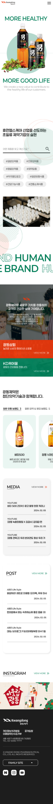
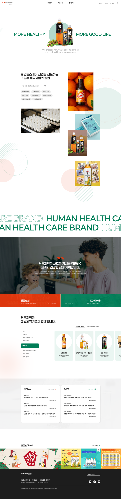

글꼴
색상
- #007D57
- #E8380D


Main page
고객들의 건강을 우선으로 한다는 의미의 문구와 함께 주요 인기 제품들이 스크롤 되며 내려간다.
Search
광동제약의 제품 강조를 위해 메인 페이지 바로 아래에 검색창을 배치. 바로 옆에는 주요 인기 제품 사진들을 배치하여 강조.
Detail
광동제약의 다양한 제품들을 한눈에 확인 가능.
SNS
광동제약의 sns 페이지 강조. 현재 어떤 이벤트를 하고있는지 빠르게 확인이 가능하다. 인스타그램은 이미지 위주의 sns이므로 이미지를 크게 배치.